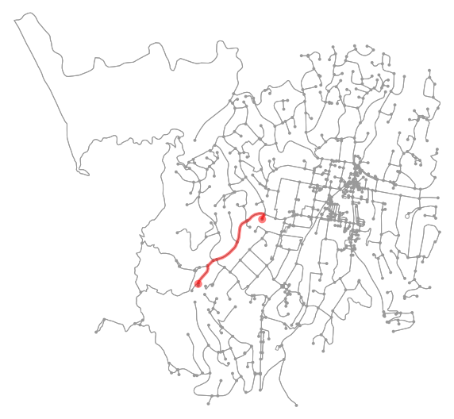
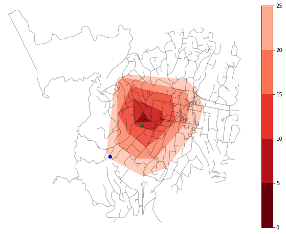
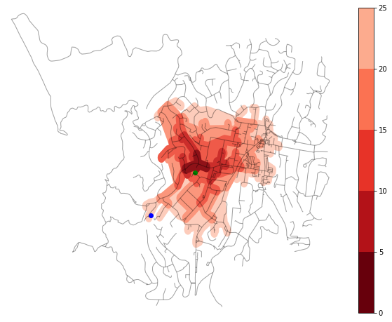

Walking in Wellington - validation and visualisation
Introduction
The OSM network has useful metadata that is consumed by pandana to calculate access to playgrounds and thus local walkbility. If these metrics are to be used for formal appraisals or evaluations, it is useful to check against commonly used routing APIs. Here, we look at Google Maps and GraphHopper but Targomo is also a great option - especially if the isochrone polygons are the desired output. In this post, isochrones will be constructed after the accesibility calculation using some nifty features of networkx.
Validating the accessibility analysis
We’ve see how Wellington’s topography affects travel times to playgrounds. A quick validation of the approach can be done with Google Maps. A more complex validation can be done Graphhopper.
We’ll be validating the route from 110 John Sims Drive to Kipling Street Play Area. I chose this particular example because of the monotonicity in gradient for the to and from journeys. Going to the park is consistently downhill and coming back is consistently uphill. None of the classic Wellington roller-coaster routes here!
The route used to calculate the accessibility in pandana can be visualised by extracting the nearest graph nodes to the origin and destination and using the Networkx get_shortest_path method.
With a little additional poking about the graph edges, we can extract the summary, in distance and time, for this route. The code for this is available in the Jupyter Notebook.
Route is 925 m long and takes 24.3 mins

A more detailed analysis of the route gives:
110 John Sims Drive to Kipling Street Play Area: Street distance is 925 m. At 5km/hr, it takes 11.1 mins. Going to the park (downhill) takes 11.9 mins. Coming back from the park (uphill) takes 12.3 mins’
With Google Maps
110 John Sims Drive to Kipling St Play Area in Johnsonville. - Uphill from the park: 14 minutes - Downhill to the park: 11 minutes
We don’t expect the OSM street data to differ much from Google (at least for a city!) and the elevation data should be identical. The key difference is likely the distance to time conversion. For this validation, we have over-estimated the downhill time and under-estimated the uphill time.
obler’s time conversion is definitely an ambitious target - especially for families walking with young children. For a more accurate analysis, we’d need recommendations of a more sensible top speed and hill climbing speed retardation from Urban Planners.
With Graphhopper Routing API
Graphhopper is a powerful engine with a fantastic routing API. It’s easy to register for a free licence and get an API key. Since I’m only using the API for validation, I can stay well within the free limit.
Results from the API request can be visualised both on Graphhopper Maps and OpenStreetMap directions.
Crafting the API request is quite simple - the request parameters are detailed here. The resultant JSON can be parsed and used for further analysis.
I haven’t quite figured out how to ingest this stream of rich data for further analysis. In theory, I’d like to be able to validate the speeds and times of segments in the route against the pandana + osmnx extract. Perhaps even reverse engineer the gradient to speed conversion.
graph_hopper_api_key = data_loaded['graph_hopper_api_key'][0]
graph_hopper_query = "https://graphhopper.com/api/1/route?point=-41.2292,174.7922&point=-41.2253,174.7976&vehicle=foot&points_encoded=false&locale=nz&key=" + graph_hopper_api_key%%bash -s "$graph_hopper_query"
curl $1{"hints":{"visited_nodes.average":"28.0","visited_nodes.sum":"28"},"info":{"copyrights":["GraphHopper","OpenStreetMap contributors"],"took":4},"paths":[{"distance":1007.3,"weight":603.101372,"time":725253,"transfers":0,"points_encoded":false,"bbox":[174.792028,-41.229148,174.798734,-41.22499],"points":{"type":"LineString","coordinates":[[174.792028,-41.229148],[174.792089,-41.229032],[174.792403,-41.228742],[174.792854,-41.228362],[174.792949,-41.228113],[174.792882,-41.22792],[174.793009,-41.227871],[174.793469,-41.227519],[174.79382,-41.227449],[174.79396,-41.227773],[174.794037,-41.227829],[174.794583,-41.228031],[174.795135,-41.228387],[174.79614,-41.227492],[174.797424,-41.226418],[174.797595,-41.226301],[174.79831,-41.225888],[174.79852,-41.22564],[174.798734,-41.225427],[174.798559,-41.225274],[174.798037,-41.225018],[174.797925,-41.22499],[174.797878,-41.224999],[174.797832,-41.225054],[174.797679,-41.225337],[174.797637,-41.225354]]},"instructions":[{"distance":163.218,"heading":21.8,"sign":0,"interval":[0,5],"text":"Continue onto John Sims Drive","time":117517,"street_name":"John Sims Drive"},{"distance":68.299,"sign":2,"interval":[5,7],"text":"Turn right onto Truscott Avenue","time":49175,"street_name":"Truscott Avenue"},{"distance":31.971,"sign":1,"interval":[7,8],"text":"Turn slight right onto Truscott Avenue","time":23019,"street_name":"Truscott Avenue"},{"distance":161.515,"sign":2,"interval":[8,12],"text":"Turn right onto Elliott Street","time":116290,"street_name":"Elliott Street"},{"distance":448.627,"sign":-2,"interval":[12,18],"text":"Turn left onto Kipling Street","time":323010,"street_name":"Kipling Street"},{"distance":133.67,"sign":-2,"interval":[18,25],"text":"Turn left","time":96242,"street_name":""},{"distance":0.0,"sign":4,"last_heading":242.3439586064843,"interval":[25,25],"text":"Arrive at destination","time":0,"street_name":""}],"legs":[],"details":{},"ascend":12.986007690429688,"descend":66.6875,"snapped_waypoints":{"type":"LineString","coordinates":[[174.792028,-41.229148],[174.797637,-41.225354]]}}]}Inverting accessibility to isochrones
Our perspective so far has been the access from any street location to the nearest park. We can flip this perspective and consider the nearest street locations from the park. This perspective is the basis of isochrones.
Like the accessibility analysis, we can choose the relevant units to visualise as isochrones. I’ve kept the total travel time units in this example.
The street networks below show the 0-25 minute isochrones in increments of 5 minutes. The isochrones can be visualised as convex hull polygons, or filled street skeleton isochrones. The latter visualisation has been adapted from this excellent post. The filled street skeletons offer a more realistic visualisation - especially in areas containing street networks with low connectivity like the following example.
The points used in the validation section are repeated here. The blue and green points represent 110 John Sims Drive and the Kipling St Play Area respectively.
| Catchment polygons | Catchment along streets |
|---|---|
|  |  |
The isochrones are centered on the closest street node to the park. The address we’re considering is in the 20-25 minute isochrone. This corresponds well to the total time of 25 minutes calculated in the previous section (11 minutes downhill and 14 minutes uphill).
The isochrones visualisation is useful but we’re limited to considering a small set of parks at a time. A more insightful analysis could be to look at residential areas that fall within the catchment zones of multiple playgrounds.